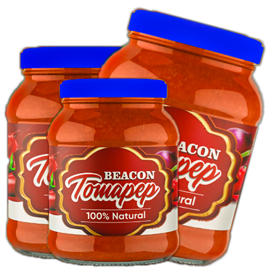
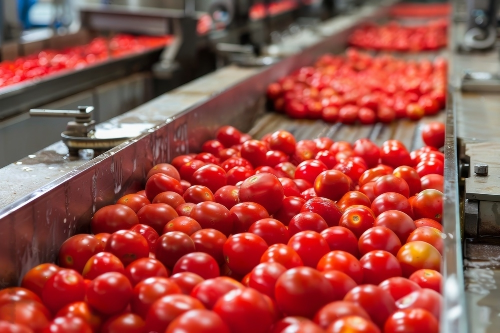
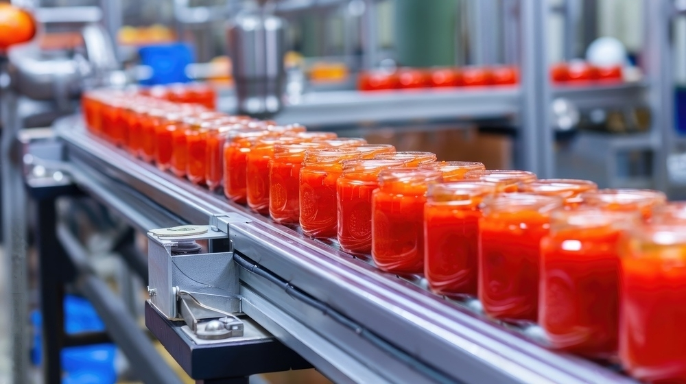

Skip the Market Hussle and Reclaim Your Time
Let our fresh natural Tomapep do the magic to your meal
Place Order Now



Discover TOMAPEP Freshness in Every Spoonful
Introducing BEACON AROMAtic TOMAPEP, where nature's finest tomatoes are transformed into the freshest and most delicious tomato paste you'll ever taste. We believe in delivering nothing but the best, and that starts with our commitment to quality and purity from farm to table.
Our journey begins in the lush, sun-kissed fields where we cultivate the juiciest, ripest tomatoes. Grown with care and harvested at the peak of their ripeness, our tomatoes are a testament to nature's bounty. We partner with dedicated farmers who use sustainable farming practices to ensure that each tomato is as clean and natural as the earth intended.
Place Order Now
Pure and Natural Processing
Once harvested, our tomatoes are swiftly transported to our state-of-the-art facility where the magic happens. We adhere to the highest standards of cleanliness and quality during the processing phase. Our advanced techniques preserve the natural flavors, vibrant colors, and essential nutrients of the tomatoes, ensuring that every batch of TOMAPEP tomato paste is as fresh as the day it was picked.
Ready to Use, Ready to Enjoy
From our farms to your kitchen, TOMAPEP tomato paste is carefully packaged to seal in the freshness. Our packaging is designed to keep the product as pure and delicious as the moment it was made, making it a convenient addition to any meal. Whether you're preparing a hearty pasta sauce, a zesty stew, or a classic homemade pizza, TOMAPEP is your go-to ingredient for an explosion of natural tomato goodness.


What Users Say About Our Product
Delivery Available Nationwide
At Beacon Aromatic Tomapep, we believe that exceptional flavor knows no borders. That’s why we’ve made it our mission to bring our premium tomato paste to homes and kitchens across the globe. Whether you're in bustling cities or remote towns, our seamless global delivery ensures you never miss out on the rich taste and unbeatable aroma of Beacon Aromatic Tomapep. Wherever you are, Beacon Aromatic Tomapep arrives fresh and ready to use.